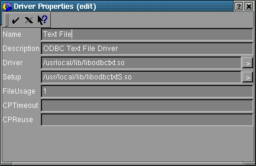
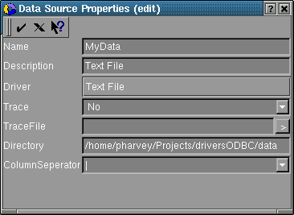

ODBCConfig
ODBCConfig is a great graphical utility program for managing ODBC. I will assume that you have this program (or its gtk version gODBCConfig) installed and in your path. See the main documentation for unixODBC for more on how to do this.
You can run ODBCConfig from a shell just like a standard UNIX command but its graphical so you must be running X windows.
Driver Setup
Enter a shell as a root user and run ODBCConfig. You may have to log-out of X Windows and then log-in as a root user first (or use xhost). Then proceed to the Drivers tab and click the Add button. You should see a window such as figure 1.

figure 1
You will likely find the driver and setup libs in /usr/local/lib. Browse to, and select these files. Click the check-mark when you are done. Now this driver is availible for use by system processes and users.
There are other ways to do this. See the main documentation for unixODBC for more on how to do this.
Data Source Setup
ODBC drivers are almost always used via a Data Source Name (DSN). Use ODBCConfig to add a DSN.
The setup lib (odbctxtS.so) provides ODBCConfig
with DSN properties which are specific to the Text File Driver (odbctxt.so).
See figure 2.

figure 2
Name (mandatory)
--------
This should be a unique data source name.
Try to make it; short and meaningfull - avoid unusual characters and spaces
in the name.
Description (optional)
--------
More information about what this DSN is
to be used for.
Driver (automatic)
--------
This is the driver you selected when selecting
to add a DSN.
Trace (optional)
--------
Turn tracing on/off. This should always
be turned off. Using a DSN with tracing on will result in a great deal
of logging information being stored to TraceFile. This uses up disk space
and slows the driver down. This is only used when debugging a problem with
the driver.
TraceFile (optional)
--------
This is the file where Trace data is logged.
Directory (optional)
--------
The Text File Driver views a directory as a 'database'. This is the place where all of the table files will exist.
You can add a table by using the "CREATE TABLE"
SQL statement or by simply copying a valid
text file into the directory.
You can remove a table by using the "DROP TABLE"
SQL statement or by simply removing the file from the database directory.
The driver will use ~/.odbctxt if you leave this field blank.
Support for, an optional, catalog file
may be implemented at some point in the future.
ColumnSeperator (optional)
--------
This is the character that is used to seperate
columns in the table file. It defaults to '|'. This must be consistent
with ALL of the table files in the database directory. See FileFormats.